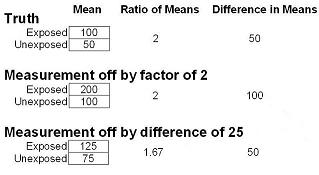

Bias or Systematic Error (Validity)
Lead Author(s): Jeff Martin, MD
Origin of the Term Bias
%LIGHTBOX{ image="picture_bias.JPG" thumbnail="tnpicture_bias.JPG" caption="Picture of Bias"}%
Bias refers to a systematic error.
The origin of the word appears to come from the scholar, Bias, of Priene (which today is in Turkey), who was one of the seven sages of classical antiquity. Legend has it that Bias was once consulted by King Croesus about the best way to deploy warships against the Ionians. Because Bias wanted to avoid a war, he falsely advised the king that the Ionians were planning to use horses. Bias later confessed to the King that he had lied but the King was so pleased about his motives that he made peace with the Ionians. Subsequently, a deviation from truth became known as bias.
Definition of Bias
Systematic error is also known as bias.
It is any systematic process in the conduct of a study that results in the incorrect estimate of a measure of disease occurrence or measure of association.
- Because it is a systematic process, it will cause a distortion from the truth in a predictable (not random) direction.
- We say that the amount of systematic error is captured in the validity of the inference.
Diagram of Systematic Error
%LIGHTBOX{ image="target2.JPG" thumbnail="tntarget2.JPG" caption="Bias Target"}%
As you can see below the difference between the average of different attempts and the truth (at the center of the target) is known as the systematic error or bias.
Selection Bias
Technical definition: Bias that is caused when individuals have different probabilities of being included in the study according to relevant study characteristics: namely, the exposure and the outcome of interest.
Plain definition: Bias that is caused by some kind of problem in the process of selecting subjects initially or - in a longitudinal study - in the process that determines which subjects drop out of the study.
For further descriptions of selection bias in different types of studies see Selection Bias.
Confounding Bias
A confounding bias is caused when there is another pathway to the disease, that is getting in the way of our ability to investigate our main question - a pathway different from the one you are interested in studying.
A measurement bias is defined as
Technical Definition: It is the bias, in other words deviation from the truth, that it is caused when any measurement collected about or from subjects is not completely valid (i.e., not completely accurate). Inaccuracy in the measurement of any kind of variable, be it an exposure variable, an outcome variable, or a confounder variable can lead to measurement bias.
AKA: What are the other terms you might find for measurement bias? Measurement bias is also known as misclassification bias, information bias (the text uses that term) or identification bias. Misclassification bias is a good term and I will often use measurement bias and misclassification synonymously. Indeed, misclassification is a good term because misclassification of a variable is the immediate result of an error in measurement.
Systematic Error in a Continuous Variable - Measurement Bias in Analytic Studies
With a continuous variable there aren't broad categories, but rather a continuum of responses. Hence, systematic error in a continuous variable just results in everyone being systematically shifted up or down the scale.

1) In the above data the truth is that the mean is 100 in the exposed group and 50 in the unexposed group. Therefore the ratio of the means is 2 and the difference in means is 50.
2) If the measurement is off by a factor of 2, you can see that the exposed group now has a mean of 200 and the unexposed has a mean of 100.
- The ratio, however, is the same - no bias compared to the truth.
- If your goal, however, is to look at the difference in means, then the difference is 100, as opposed to 50.
- This is a biased result.
3) If the measurement is off by an absolute difference of 25 units.
- Here, you can see that the exposed group has a mean value of 125 and the unexposed group has a value of 75.
- The ratio in this case is 1.67, which is biased compared to the truth.
- The absolute difference, however, is still 50 and unbiased.
So, in the face of systematic error in an interval scale measurement, whether or not there is bias depends upon the measure of association in question.


{kind=link}
{kind=link}